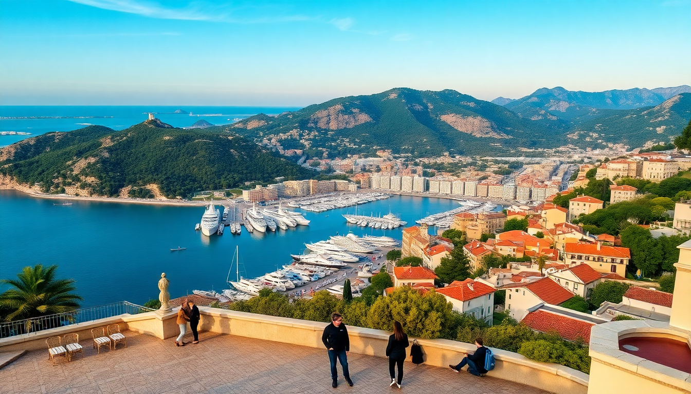

Best Day Trips from Nice: Monaco, Antibes & Eze

I spent a week based in Nice, and every morning I’d pick a different town on the train line. No rental car needed, no planning headaches. Here’s what actually worked, what didn’t, and where I’d eat between sights.
Why base yourself in Nice for day trips?
Nice’s main train station, Gare de Nice-Ville, is a hub for the TER and TGV lines that run east toward Italy and west toward Cannes. Trains to Monaco and Antibes run every 15-30 minutes. You can leave after a late breakfast, see the main sights, and be back for dinner on the Promenade des Anglais. I never booked tickets ahead—just tapped my contactless card at the turnstile.
How do you get from Nice to Monaco?
The TER train from Nice-Ville to Monaco-Monte-Carlo station takes about 25 minutes and costs around €4.50 each way. Sit on the left side for sea views. I tried the bus once (line 100, which runs along the coastal road) and it took over an hour due to traffic. Stick with the train.
Once you arrive in Monaco, the station drops you underground. Follow signs to the Place du Casino exit, or take the escalators up to the Jardin Exotique for a panoramic view. I walked from the station to the Prince’s Palace in about 15 minutes uphill—good leg work before lunch.
- Prince’s Palace of Monaco – Changing of the guard at 11:55 AM daily. Free to watch, but the interior tour costs €10 and is skippable.
- Casino de Monte-Carlo – Dress code enforced (no shorts, no sneakers). I didn’t gamble, but the atrium is worth five minutes.
- Jardin Exotique – Cacti and succulents on a cliff. Entry is €7.20, and the view over the port is better than from the casino.
- Port Hercule – Walk along the marina to see superyachts. The Condamine Market (open mornings) has good socca and fresh juice.
Is Monaco worth a full day?
No. I spent four hours in Monaco and felt I’d seen enough. The place is clean, orderly, and expensive. A cappuccino near the casino cost €8. I’d pair Monaco with a stop in Eze on the way back. Alternatively, skip the Prince’s Palace interior and spend time at the Oceanographic Museum (€19 entry, but the aquarium is well done).
- Lunch tip: Avoid the casino-area restaurants. Walk to U Cavagnetu on Rue Terrazzani for a €12 pan-bagnat (local tuna sandwich).
- Worth skipping: The train station exit to the casino involves a long escalator tunnel. Take the outdoor stairs near the port instead.
What’s the best way to visit Eze?
Eze is a medieval hilltop village, and the view from the Jardin Exotique d’Èze (€7 entry) is the main draw. The garden has aloe, cacti, and a cliffside perch over the Mediterranean. I took the train from Nice to Eze-sur-Mer station, then caught the #83 bus up the hill (€1.50, runs every 30 minutes). The bus drops you at the village entrance. Walking up from the station is steep and takes 45 minutes—do it if you want a workout, but skip it in July.
- Eze Village – Cobblestone alleys, art galleries, and a few overpriced souvenir shops. The Château de la Chèvre d’Or hotel has a restaurant with a terrace view, but lunch there starts at €60.
- Fragonard Perfume Factory – Free guided tour in English. You can smell testers and buy perfume, but no pressure to purchase.
- Nietzsche Path – A hiking trail from Eze Village down to the sea. It’s 2 km, rocky, and takes about an hour. I’d only do it downhill.
- Local lunch: La Taverne d’Eze serves a €19 plat du jour (roast chicken with vegetables). The terrace is small, so arrive before 12:30 PM.
How do you spend a day in Antibes?
Antibes is less polished than Monaco and less touristy than Nice. The old town, Vieil Antibes, has narrow streets and a morning market at Cours Masséna. I walked from the Antibes train station to the Picasso Museum (housed in the Château Grimaldi) in ten minutes. The museum is small, but the Picasso ceramics collection is unique—entry is €10.
- Marché Provençal – Open daily until 1 PM. I bought a jar of tapenade and a bag of socca for €5 total.
- Cap d’Antibes – A coastal walking path (Sentier du Littoral) that goes past luxury villas and rocky coves. It’s 5 km round trip from the port.
- Plage de la Gravette – A free public beach near the old town. Sandy, shallow, and crowded on weekends.
- Lunch spot: Le Brulot on Rue de la Tourraque. I had the mussels in white wine for €15. The owner doesn’t rush you.
- Nightlife tip: Le Bastion is a small bar on the ramparts with €5 beers and a view of the port. Good for a sunset drink.
Can you combine Antibes and Eze in one day?
Technically yes, but I wouldn’t. Both are in opposite directions from Nice (Antibes west, Eze east). You’d spend two hours on trains and buses. I’d pick one per day. If you’re short on time, choose Antibes for the beach and market, or Eze for the view and quiet.
- Better combo: Monaco and Eze in one day. Train from Nice to Monaco (25 min), then bus from Monaco to Eze (30 min, line 112). The bus goes uphill to the village entrance.
- Train logistics: The TER line runs every 30 minutes between Nice-Ville and Antibes. Buy a €10 day pass at the ticket machine or use the SNCF app.
FAQ
What’s the best time of year for these day trips? May, June, or September. July and August are crowded and hot—Monaco’s casino line can stretch 20 minutes in the sun. I went in mid-May and had light crowds at Eze’s garden. Winter (December–February) is quiet but some bus routes run less frequently.
Do I need to book train tickets in advance? No. The TER trains are regional and don’t require seat reservations. Just tap your credit card at the gate or buy a ticket from the machine. The TGV to Antibes does require a reservation if you’re coming from farther away, but from Nice it’s all regional.
Are these day trips doable with kids? Yes, but with caveats. Monaco’s Oceanographic Museum is great for kids (sharks, turtles, touch pools). Eze’s steep cobblestones are tough with a stroller—I saw parents carrying them. Antibes has a playground near the port and the beach is calm for swimming.
Conclusion
- Take the train between Nice and Monaco (25 min, €4.50). Avoid the bus.
- Spend four hours in Monaco, then add Eze via bus line 112.
- In Eze, pay for the Jardin Exotique view and skip the pricey hotel restaurants.
- Antibes is best for a relaxed day: hit the morning market, walk the Cap, and eat at Le Brulot.
- Don’t combine Antibes and Eze in one day—too much travel time.